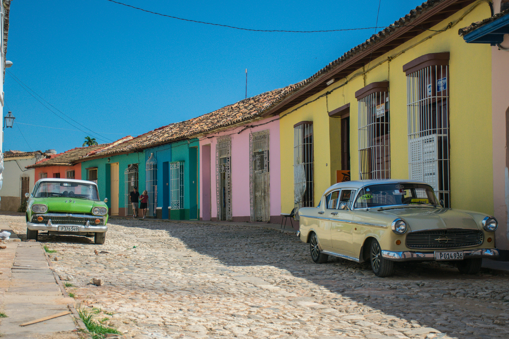

Peru

Machu Picchu
Perched high upon a ridge, 300 meters above the Urubamba River, the majestic Inca City of Machu Picchu is one of the most dramatic settings of a ruined city anywhere in the world. Almost as impressive as the ruins themselves is the spectacular backdrop of steep, lush, and often cloud-shrouded mountains.
Standing near the caretaker's hut, looking out over Machu Picchu, the jungle-covered mountains, and the river far below, you can imagine why the Incas chose this place to build their city.

Lake Titicaca
The sparkling blue water of Lake Titicaca is surrounded by rolling hills and traditional small villages. The lake area is a mix of beautiful scenery and culture that sets it apart from other regions of the country. Sitting at 3,820 meters above sea level, Lake Titicaca is known for being the highest navigable lake in the world.
A boat trip to the islands and surrounding villages is the best way to appreciate the lake. One of the main tourist attractions is the Uros Floating Islands (Islas Flotantes), which sustain small communities of Uros Indians. These are man-made islands constructed of reeds that have sustained a traditional way of life since the time of the Incas.
Cañon del Colca
Although it was once thought to be the deepest canyon in the world, Colca Canyon (Cañon del Colca), twice as deep as the Grand Canyon, is the second deepest after nearby Cotahuasi Canyon. The canyon reaches a depth of 3,400 meters and is the result of a seismic fault between two volcanoes. At the base far below is a winding river.
The Colca Canyon area has been inhabited for thousands of years and was home to the Collagua, Cabana, and eventually the Inca peoples. Stone terracing along the canyon walls dates to AD 800 and is still in use today.
Cuba
Old Havana (Habana Vieja)
A UNESCO World Heritage site, Habana Vieja or Old Havana is a well-preserved slice of Cuban history. Strolling around the cobbled streets and gazing up at the grand Baroque and neoclassical buildings, it's easy to imagine what life in Cuba was like 200 years ago.
Extensive renovations are now breathing new life into the historic buildings. Major attractions here include the Plaza de la Catedral, home to the Cuban Baroque Catedral de San Cristobal; the legendary restaurant and Hemingway hangout, Bodeguita del Medio; and the military fortress, Castillo de la Real Fuerza.
Varadero
Varadero is one of Cuba's most famous beach destinations, and home to one of the best beaches in the Caribbean. It stretches along the Peninsula de Hicacos, which juts into the sea off the north coast; a drawbridge connects it to the mainland.
More than 50 beach resorts line this popular palm-fringed strip, and its magnificent white-sand beaches draw visitors from around the world. Varadero highlights include Parque Ecológico Varahicacos (Varadero Ecological Park), and its two caves, Cueva de Ambrosio and Cueva de Musulmanes.

Trinidad
Exploring the town of Trinidad, Cuba, a UNESCO World Heritage Site, is like stepping back in time. The beautifully restored buildings and cobblestone streets in the city center exude a quaint colonial feel. Much of the architecture dates from the 17th to the 19th centuries, when Trinidad prospered from both the sugar and slave trades.
Today, Trinidad is one of the best cities in Cuba to visit, apart from Havana. You can soak up its lively ambience in the cobblestone Plaza Mayor, the city's central square. Above the square stands the neoclassical Church of the Holy Trinity (Iglesia Parroquial de la Santisima Trinidad).
Ecuador
Quito: Ecuador's Historic Andean Capital
Set high in the Andes, Quito, the capital of Ecuador, is filled with well-preserved examples of colonial architecture and is the largest historic center in South America. Preserved as a UNESCO World Heritage site for its many old churches, beautiful public squares, and world-class museums, this city of 1.6 million people has long been a favorite with artisans and is a great place to shop for local art and crafts, from ceramics and wood carvings to colorful clothing.
The most famous attraction in Quito's historic center is the San Francisco Church on the Plaza San Francisco. Dating back to the first half of the 1500s, the church's white-washed twin towers flank each side of the entrance to this massive complex. It's notable for its splendid Baroque interior and the Convent Museum of San Francisco with its religious paintings, sculptures, carvings, porcelain, textiles, and handcrafted furniture.
Cotopaxi and Cajas National Parks
Two of Ecuador's most popular national parks, Cotopaxi (and Cajas, are within easy driving distances from the cities of Cuenca and Quito and make wonderful day trips. Of the two, Cotopaxi National Park (Parque Nacional Cotopaxi), just 50 kilometers south of Quito, is perhaps the best known.
Highlights of a visit include the opportunity to see its many volcanoes up close. The most remarkable of these is the massive (and still active), Cotopaxi volcano. With its last eruption as recent as 2015, this massive volcano, along with the smaller Rumiñawi and Sincholagua volcanoes, dominates the area's stunning scenery.

The Hot Springs of Baños
Thanks to its lovely surroundings and numerous hot springs, the small town of Baños de Agua Santa is a popular tourist destination within central Ecuador. Located at the western edge of the Amazon basin, Baños is nestled among dense jungle-like forests and offers numerous recreational opportunities including hiking and mountain biking.
But the big draw are its mineral-rich hot springs and many waterfalls. Some of the best of these beautiful waterfalls are easily accessible from the town via a series of trails incorporating rope bridges with incredible views over the falls and their deep pools. Adventure sports such as whitewater rafting and kayaking are also popular here. More sedate things to do include visiting landmarks such as the Virgen de Agua Santa church with its famous statue of Mary (it's claimed she appeared at one of the town's waterfalls).